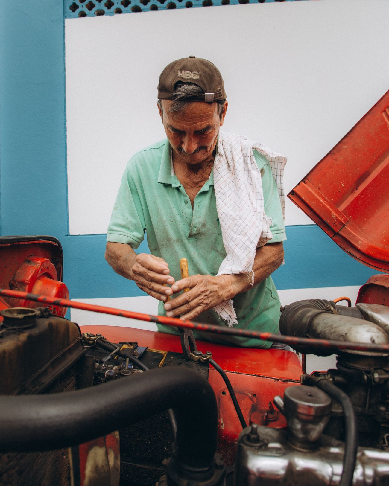

Ремонт иномарок —
цены «от» и запись на удобный час
Выберите работу, укажите машину и свободное время — заявка уйдёт мастеру. Рейтинг 5,0 на Яндекс Картах по 88 оценкам.

Фото — иллюстрация (Pexels), не сотрудник СоюзАвто24
У сервиса 5,0 и 71 отзыв на Яндекс Картах, а сайт — почти пустой шаблон без услуг и записи; с телефона его не прочитать, на странице контактов — «Моя компания».
Работа, машина и удобный час — одной заявкой с телефона; цены «от» по узлам видны до звонка.
Предлагает только часы в графике пн–сб 9–19 по красноярскому времени, не даёт выбрать прошедшие и отправляет заявку мастеру в Telegram.
✦Это концепт. С вашими фото и правками будет ещё лучше
Работы и цены «от»
Прайс — со страницы «Услуги» текущего сайта. Итог зависит от машины и запчастей; актуальность цен уточняется.
В отзывах клиенты также упоминают развал-схождение, заправку кондиционера и замену ремня ГРМ — цены на эти работы уточняются.
5,0 на Яндекс Картах
Цитаты — дословно с Яндекс Карт, без имён. Владелец отвечает на отзывы.
88 оценок · 71 отзыв на Яндекс Картах · данные на 25.11.2026Все отзывы ↗
«Ездил на сход-развал,во время диагностики вылезли ещё болячки. Как итог: все что было необходимо исправили и теперь старушка не ест резину и держит дорогу.»Отзыв с Яндекс Карт
«замена радиатора и всех патрубков прошла хорошо, всё сделали качественно, а самое главное не дорого, при новой неисправности обязательно обращусь сюда»Отзыв с Яндекс Карт
«Отличное место!Съездил поменять ремень и провести т.о. .Мужики отлично сработали обслужили все быстро установили качественный ремень и недорого.Рекомендую)»Отзыв с Яндекс Карт
Многие клиенты в отзывах отмечают, что удобно записываться заранее — на сайте это можно сделать без звонка.
Запись за 4 шага
Свободные часы — в графике пн–сб 9:00–19:00 (по Яндекс Картам) по красноярскому времени.
Грунтовая, 17
Почта: souzauto24@yandex.ru. WhatsApp и Viber — +7 933 999-33-22.